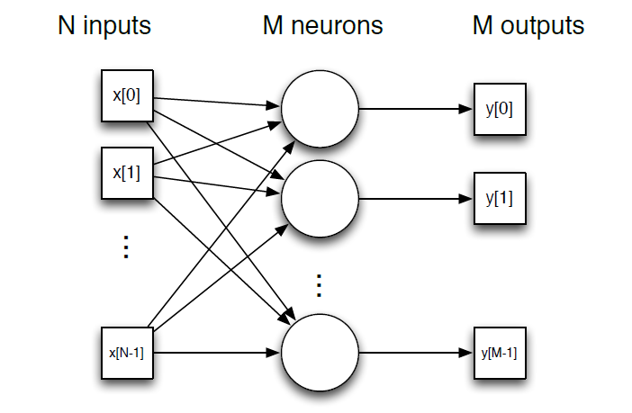
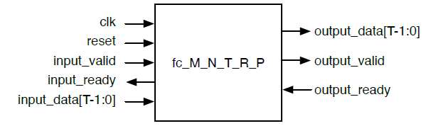
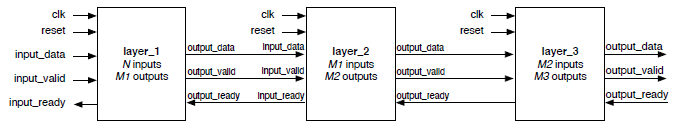

Evaluating a neural network
The goal of this project is to create a tool to generate hardware designs. The tool will take in specifications and generate synthesizable designs. The great thing about this design is its flexibility.
The users can generate designs using various different parameters. Some off the parameters being the matrix dimensions, the bit-width, rectified linear unit, stages of parallelism etc. Designers have to deal with various trade-off. For example, cost vs throughput, power vs throughput etc. Analysing the synthesis report, the user can choose the adequate design.
The final design consisted of 3 layers. The design contained an optimizer to find the stages parallelism needed in each layer to maximize the throughput of the neural network. This makes the tool more robust. In this design we were focused on maximizing throughput and disregarding the increase in cost, power etc.
Two people including me worked on this design. The languages used were SystemVerilog and C++. The simulation tool used was ModelSim. The synthesis tool used was DesignCompiler.